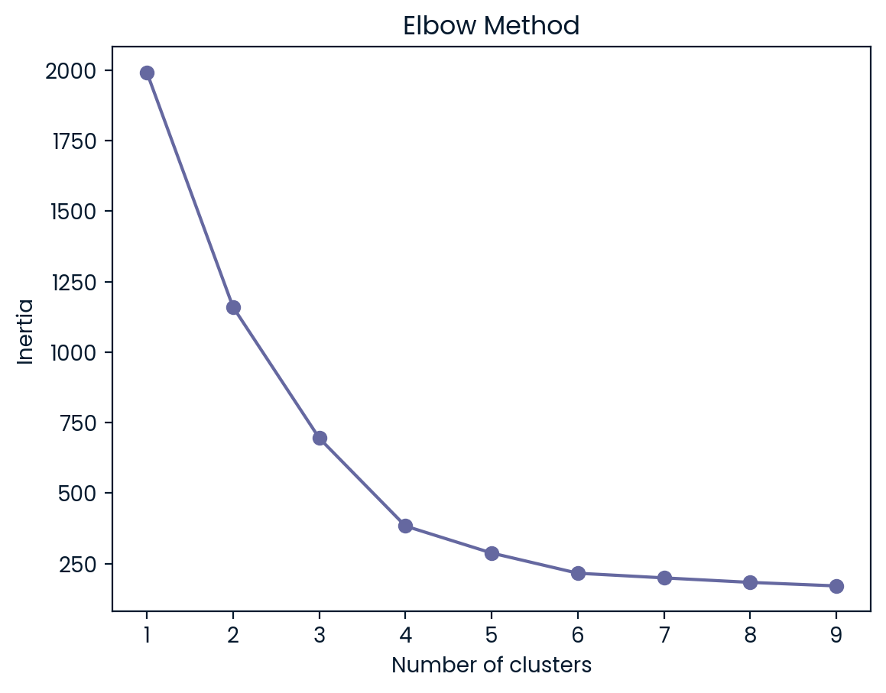
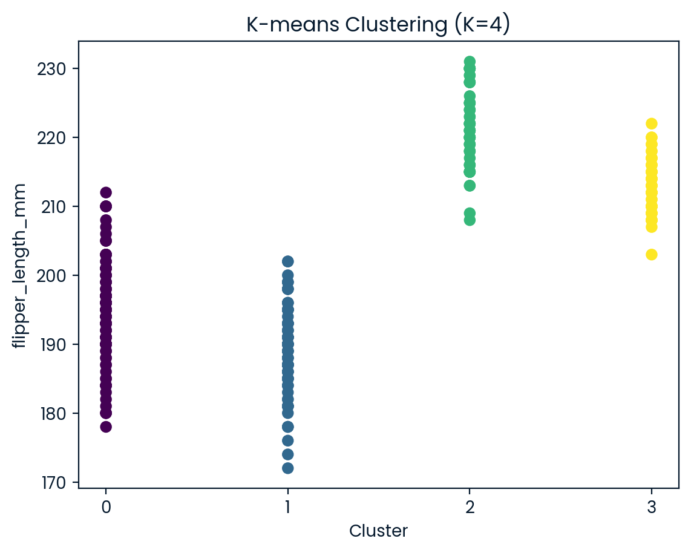

Code
---
title: "ML Clustering: Penguin Species"
description: "Unsupervised species classification using K-means and PCA."
execute:
enabled: false
------
title: "ML Clustering: Penguin Species"
description: "Unsupervised species classification using K-means and PCA."
execute:
enabled: false
--- source: @allison_horst https://github.com/allisonhorst/penguins
source: @allison_horst https://github.com/allisonhorst/penguins
You have been asked to support a team of researchers who have been collecting data about penguins in Antartica! The data is available in csv-Format as penguins.csv
Origin of this data : Data were collected and made available by Dr. Kristen Gorman and the Palmer Station, Antarctica LTER, a member of the Long Term Ecological Research Network.
The dataset consists of 5 columns.
| Column | Description |
|---|---|
| culmen_length_mm | culmen length (mm) |
| culmen_depth_mm | culmen depth (mm) |
| flipper_length_mm | flipper length (mm) |
| body_mass_g | body mass (g) |
| sex | penguin sex |
Unfortunately, they have not been able to record the species of penguin, but they know that there are at least three species that are native to the region: Adelie, Chinstrap, and Gentoo. Your task is to apply your data science skills to help them identify groups in the dataset!
::: {#57295d13-5753-4f8d-aa96-cd6815f7cbd9 .cell executionCancelledAt=‘null’ executionTime=‘20’ lastExecutedAt=‘1728389830131’ lastExecutedByKernel=‘c4d730cd-62a5-415f-8ca1-80b88aa8f478’ lastScheduledRunId=‘null’ lastSuccessfullyExecutedCode=’# Import Required Packages import pandas as pd import matplotlib.pyplot as plt from sklearn.cluster import KMeans from sklearn.preprocessing import StandardScaler
penguins_df = pd.read_csv(“penguins.csv”) penguins_df.head() penguins_df.info()’ quarto-private-1=‘{“key”:“outputsMetadata”,“value”:{“0”:{“height”:269,“type”:“stream”}}}’ execution_count=13}
# Import Required Packages
import pandas as pd
import matplotlib.pyplot as plt
from sklearn.cluster import KMeans
from sklearn.preprocessing import StandardScaler
# Loading and examining the dataset
penguins_df = pd.read_csv("penguins.csv")
penguins_df.head()
penguins_df.info()<class 'pandas.core.frame.DataFrame'>
RangeIndex: 332 entries, 0 to 331
Data columns (total 5 columns):
# Column Non-Null Count Dtype
--- ------ -------------- -----
0 culmen_length_mm 332 non-null float64
1 culmen_depth_mm 332 non-null float64
2 flipper_length_mm 332 non-null float64
3 body_mass_g 332 non-null float64
4 sex 332 non-null object
dtypes: float64(4), object(1)
memory usage: 13.1+ KB:::
penguins_df.describe()| culmen_length_mm | culmen_depth_mm | flipper_length_mm | body_mass_g | |
|---|---|---|---|---|
| count | 332.000000 | 332.000000 | 332.000000 | 332.000000 |
| mean | 44.021084 | 17.153012 | 200.975904 | 4206.475904 |
| std | 5.452462 | 1.960275 | 14.035971 | 806.361278 |
| min | 32.100000 | 13.100000 | 172.000000 | 2700.000000 |
| 25% | 39.500000 | 15.600000 | 190.000000 | 3550.000000 |
| 50% | 44.700000 | 17.300000 | 197.000000 | 4025.000000 |
| 75% | 48.625000 | 18.700000 | 213.000000 | 4781.250000 |
| max | 59.600000 | 21.500000 | 231.000000 | 6300.000000 |
Inspecting the DataFrame shows us that we have 4 numerical and one categorical variable. KMeans clustering does not work well with categorical variables because it measures the distance from the centroid of each cluster. Having a non-numerical value does not contribute much information to this mean.
Additionally, when a dataset has features with very different variances (we can see this from the standard deviations above), the assignment to a cluster can get “muddy”. For this reason, the categorical variable will be converted to a numerical one, and the data will be standardized so that the mean and variance for every feature is the same.
::: {#6bd1359b-6f28-42d7-8a1a-0ceafc22f86a .cell executionCancelledAt=‘null’ executionTime=‘65’ lastExecutedAt=‘1728389830242’ lastExecutedByKernel=‘c4d730cd-62a5-415f-8ca1-80b88aa8f478’ lastScheduledRunId=‘null’ lastSuccessfullyExecutedCode=’ # Step 1 - Perform preprocessing steps on the dataset to create dummy variables out of categorical variable # Convert sex into dummy variables using pd.get_dummies penguins_df = pd.get_dummies(penguins_df, dtype='int')
penguins_df ’ quarto-private-1=‘{“key”:“outputsMetadata”,“value”:{“0”:{“height”:550,“tableState”:{“customFilter”:{“const”:{“type”:“boolean”,“valid”:true,“value”:true},“id”:“f914e600-8706-4033-a0f9-1afde98bdb4d”,“nodeType”:“const”}},“type”:“dataFrame”}}}’ execution_count=15}
# Step 1 - Perform preprocessing steps on the dataset to create dummy variables out of categorical variable
# Convert sex into dummy variables using pd.get_dummies
penguins_df = pd.get_dummies(penguins_df, dtype='int')
penguins_df| culmen_length_mm | culmen_depth_mm | flipper_length_mm | body_mass_g | sex_FEMALE | sex_MALE | |
|---|---|---|---|---|---|---|
| 0 | 39.1 | 18.7 | 181.0 | 3750.0 | 0 | 1 |
| 1 | 39.5 | 17.4 | 186.0 | 3800.0 | 1 | 0 |
| 2 | 40.3 | 18.0 | 195.0 | 3250.0 | 1 | 0 |
| 3 | 36.7 | 19.3 | 193.0 | 3450.0 | 1 | 0 |
| 4 | 39.3 | 20.6 | 190.0 | 3650.0 | 0 | 1 |
| ... | ... | ... | ... | ... | ... | ... |
| 327 | 47.2 | 13.7 | 214.0 | 4925.0 | 1 | 0 |
| 328 | 46.8 | 14.3 | 215.0 | 4850.0 | 1 | 0 |
| 329 | 50.4 | 15.7 | 222.0 | 5750.0 | 0 | 1 |
| 330 | 45.2 | 14.8 | 212.0 | 5200.0 | 1 | 0 |
| 331 | 49.9 | 16.1 | 213.0 | 5400.0 | 0 | 1 |
332 rows × 6 columns
:::
::: {#fee65dc2-6b05-403a-bde9-e84ebdb75354 .cell executionCancelledAt=‘null’ executionTime=‘63’ lastExecutedAt=‘1728389830305’ lastExecutedByKernel=‘c4d730cd-62a5-415f-8ca1-80b88aa8f478’ lastScheduledRunId=‘null’ lastSuccessfullyExecutedCode=’# Step 2 - Perform preprocessing steps on the dataset - standarizing/scaling # standardize mean and variance of sample features to reduce cluster “muddiness” - general measure of effects of relationships between features without “range noise” scaler = StandardScaler() model = scaler.fit_transform(penguins_df) penguins_preprocessed = pd.DataFrame(data=model,columns=penguins_df.columns) penguins_preprocessed.head(10)
’ quarto-private-1=‘{“key”:“outputsMetadata”,“value”:{“0”:{“height”:50,“tableState”:{“customFilter”:{“const”:{“type”:“boolean”,“valid”:true,“value”:true},“id”:“f914e600-8706-4033-a0f9-1afde98bdb4d”,“nodeType”:“const”}},“type”:“dataFrame”}}}’ execution_count=16}
# Step 2 - Perform preprocessing steps on the dataset - standarizing/scaling
# standardize mean and variance of sample features to reduce cluster "muddiness" - general measure of effects of relationships between features without "range noise"
scaler = StandardScaler()
model = scaler.fit_transform(penguins_df)
penguins_preprocessed = pd.DataFrame(data=model,columns=penguins_df.columns)
penguins_preprocessed.head(10)
| culmen_length_mm | culmen_depth_mm | flipper_length_mm | body_mass_g | sex_FEMALE | sex_MALE | |
|---|---|---|---|---|---|---|
| 0 | -0.903906 | 0.790360 | -1.425342 | -0.566948 | -0.993994 | 0.993994 |
| 1 | -0.830434 | 0.126187 | -1.068577 | -0.504847 | 1.006042 | -1.006042 |
| 2 | -0.683490 | 0.432728 | -0.426399 | -1.187953 | 1.006042 | -1.006042 |
| 3 | -1.344738 | 1.096901 | -0.569105 | -0.939551 | 1.006042 | -1.006042 |
| 4 | -0.867170 | 1.761074 | -0.783164 | -0.691149 | -0.993994 | 0.993994 |
| 5 | -0.940642 | 0.330548 | -1.425342 | -0.722199 | 1.006042 | -1.006042 |
| 6 | -0.885538 | 1.250172 | -0.426399 | 0.581912 | -0.993994 | 0.993994 |
| 7 | -0.536545 | 0.228367 | -1.353989 | -1.250054 | 1.006042 | -1.006042 |
| 8 | -0.995746 | 2.067616 | -0.711811 | -0.504847 | -0.993994 | 0.993994 |
| 9 | -1.363106 | 0.330548 | -1.139930 | -0.629049 | 1.006042 | -1.006042 |
:::
We don’t have actual labels for the penguin species, so we can use Inertia per cluster to find the “best” number of clusters
::: {#5a5e1a30-67b6-42a5-804e-790db66d8e0b .cell executionCancelledAt=‘null’ executionTime=‘369’ lastExecutedAt=‘1728389830674’ lastExecutedByKernel=‘c4d730cd-62a5-415f-8ca1-80b88aa8f478’ lastScheduledRunId=‘null’ lastSuccessfullyExecutedCode=’# Step 3 - Detect the optimal number of clusters for k-means clustering (Model Performance) # inertia: how far from centroid the samples are in each cluster. inertia = [] for k in range(1, 10): kmeans = KMeans(n_clusters=k, random_state=42).fit(penguins_preprocessed) inertia.append(kmeans.inertia_)
plt.plot(range(1, 10), inertia, marker='o') plt.xlabel('Number of clusters') plt.ylabel('Inertia') plt.title('Elbow Method') plt.show()
’ execution_count=17}
# Step 3 - Detect the optimal number of clusters for k-means clustering (Model Performance)
# inertia: how far from centroid the samples are in each cluster.
inertia = []
for k in range(1, 10):
kmeans = KMeans(n_clusters=k, random_state=42).fit(penguins_preprocessed)
inertia.append(kmeans.inertia_)
plt.plot(range(1, 10), inertia, marker='o')
plt.xlabel('Number of clusters')
plt.ylabel('Inertia')
plt.title('Elbow Method')
plt.show()

:::
::: {#ff7d5a42-9e7c-4913-86b9-f30e290442a1 .cell executionCancelledAt=‘null’ executionTime=‘235’ lastExecutedAt=‘1728389830909’ lastExecutedByKernel=‘c4d730cd-62a5-415f-8ca1-80b88aa8f478’ lastScheduledRunId=‘null’ lastSuccessfullyExecutedCode=’#The “elbow” of the cluster is at k=4 n_clusters=4 # Step 4 - Run the k-means clustering algorithm with the optimal number of clusters
kmeans = KMeans(n_clusters=4, random_state=42).fit(penguins_preprocessed) penguins_df['label'] = kmeans.labels_
plt.scatter(penguins_df['label'], penguins_df['flipper_length_mm'], c=kmeans.labels_, cmap='viridis') plt.xlabel('Cluster') plt.ylabel('flipper_length_mm') plt.xticks(range(int(penguins_df['label'].min()), int(penguins_df['label'].max()) + 1)) plt.title(f'K-means Clustering (K={n_clusters})') plt.show()
’ execution_count=18}
#The "elbow" of the cluster is at k=4
n_clusters=4
# Step 4 - Run the k-means clustering algorithm with the optimal number of clusters
kmeans = KMeans(n_clusters=4, random_state=42).fit(penguins_preprocessed)
penguins_df['label'] = kmeans.labels_
# and visualize the clusters (here for the 'culmen_length_mm' column)
plt.scatter(penguins_df['label'], penguins_df['flipper_length_mm'], c=kmeans.labels_, cmap='viridis')
plt.xlabel('Cluster')
plt.ylabel('flipper_length_mm')
plt.xticks(range(int(penguins_df['label'].min()), int(penguins_df['label'].max()) + 1))
plt.title(f'K-means Clustering (K={n_clusters})')
plt.show()

:::
# Step 5 - create final `stat_penguins` DataFrame
# show sample means for each cluster
numeric_columns = ['culmen_length_mm', 'culmen_depth_mm', 'flipper_length_mm','label']
stat_penguins = penguins_df[numeric_columns].groupby('label').mean()
stat_penguins| culmen_length_mm | culmen_depth_mm | flipper_length_mm | |
|---|---|---|---|
| label | |||
| 0 | 43.878302 | 19.111321 | 194.764151 |
| 1 | 40.217757 | 17.611215 | 189.046729 |
| 2 | 49.473770 | 15.718033 | 221.540984 |
| 3 | 45.563793 | 14.237931 | 212.706897 |